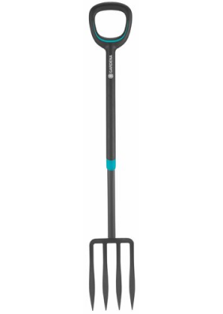
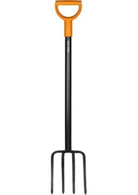

| Widełki | Opis |
|---|---|
|  |
GARDENA ErgoLine 17013-20Widły do kopania GARDENA ErgoLine to szczególnie wygodne narzędzie do kopania bez uszkadzania korzeni, przenoszenia i spulchniania ziemi, szczególnie w miejscach obsadzonych roślinami. Bardzo szeroki i ergonomicznie ukształtowany uchwyt w kształcie litery D można wygodnie trzymać w obu dłoniach w dowolnym miejscu, aby maksymalnie ułatwić sobie pracę. Owalny profil trzonka uniemożliwia przypadkowe obrócenie się rękojeści. Pokrycie trzonka antypoślizgowym tworzywem sztucznym zapewnia wygodną i bezpieczną obsługę. Wyjątkowo ostre ostrze szpadla jest wykonane ze stali hartowanej. Niezwykle szeroka listwa na stopę ze specjalnym profilem gwarantuje pewne trzymanie podczas wbijania narzędzia w ziemię i służy optymalnemu przeniesieniu siły. 199.99 zł |
|  |
FISKARS Solid 1003458Fiskars Solid 1003458 to gama funkcjonalnych narzędzi charakteryzujących się trwałością i wytrzymałością, uniwersalnym zastosowaniem oraz jakością Fiskars. Narzędzia posiadają głowicę z hartowanej stali oraz wygodną rączkę z tworzywa w kształcie litery D. Idealne do przenoszenia ogrodniczych odpadków i wycinków. Wytrzymałe zęby z hartowanej stali. 119.99 zł |